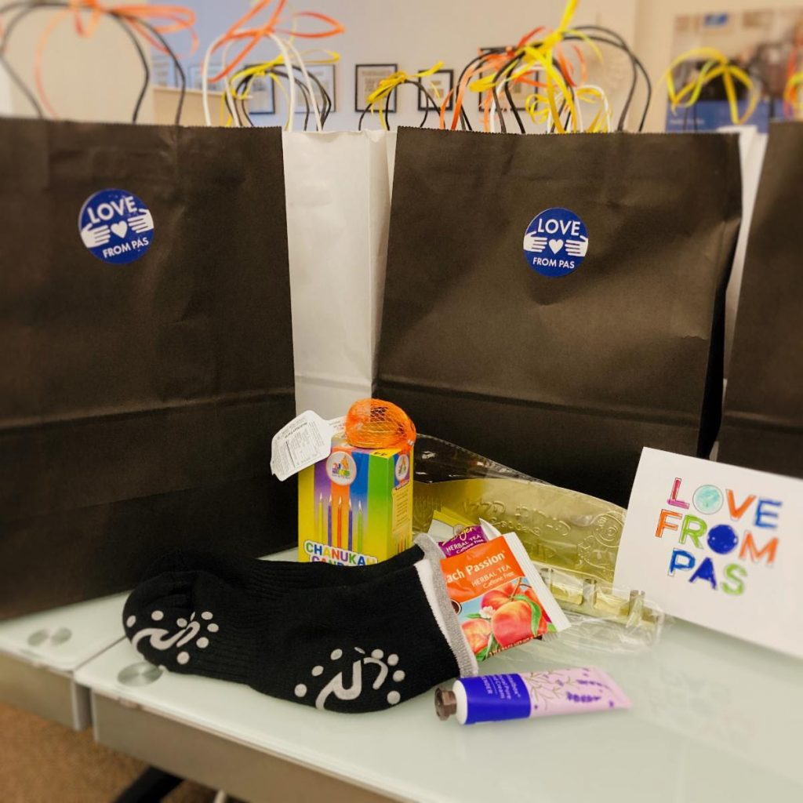
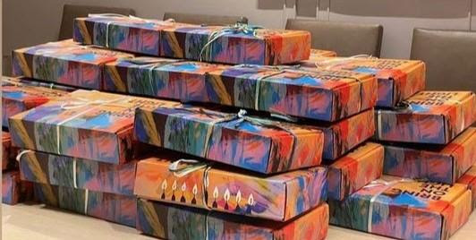
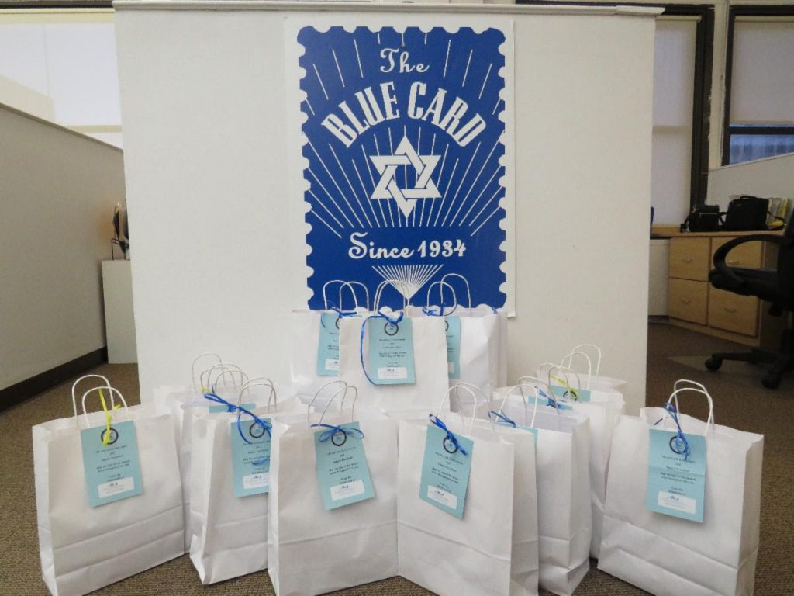

Blog Summary
Dear Friends, As the Festival of Lights is fast approaching, The Blue Card is working hard to ensure that Holocaust survivors across the nation feel the warmth, love and compassion of the community this holiday season.
Dear Friends, As the Festival of Lights is fast approaching, The Blue Card is working hard to ensure that Holocaust survivors across the nation feel the warmth, love and compassion of the community this holiday season. In addition to providing Holocaust survivors with critical financial assistance, The Blue Card has partnered with various organizations to deliver special holiday packages and services to this most deserving population. We extend our sincere gratitude to the following partners: Park Avenue Synagogue For the last few years, The Blue Card’s been working with the Park Avenue Synagogue to deliver special Hanukkah/Winter Packages to Holocaust survivors in the five boroughs of New York City. As part of the synagogue’s long-standing tradition, volunteers assemble packages as part of the temple’s Mitzvah Day Project. The packages include:Tin Menorah CandlesPotato latke mix and cooking oilSugar free crackers, cookies or chocolate coinsComfort items such as a mug, warm socks, gloves, or a blanketTea packagesSodium free chicken mixPotholder or an oven mitt Temple Har Shalom The Sisterhood a Temple Har Shalom in Warren, NJ organized a Hannukah drive for Holocaust survivors in the Tri-State area. The 85 Hannukah packages provided include warm gloves, tea biscuits, tea and cocoa packets, instant latke mix, and fruit cocktail. Chabad of Tribeca – Hanukkah Packages The community will be putting together Hanukkah/Winter packages for Holocaust survivors consisting of:Hanukkah related: latke mix, chocolate candies, candles and/or a menorah, household items, as well as a card made and/or written by the children of the school.Winter related: canned vegetable soup, tea bags, cookies, dried fruit, mug, hand lotion (for sensitive skin), warm socks, gloves, hat, or scarf. JCP Downtown We are collaborating with the JCP Downtown to provide virtual volunteering for its constituents. The community members will record special message for Holocaust survivors in honor of Hanukkah which The Blue Card will share with those we service.
We thank you for your support during this holiday season and throughout the year and hope that you will consider making your tax deductible donation today.Wishing you and your loved ones a Happy Hanukkah and a joyous holiday season ahead.Sincerely,
Masha Pearl Executive DirectorNow, in their late 70’s, 80’s, 90’s and many over the age of 100 years old, Holocaust survivors rely on outside help more than ever. Please help us carry out our time-sensitive mission.


